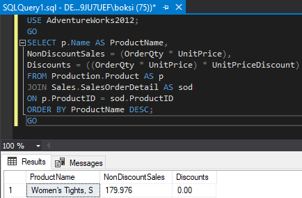
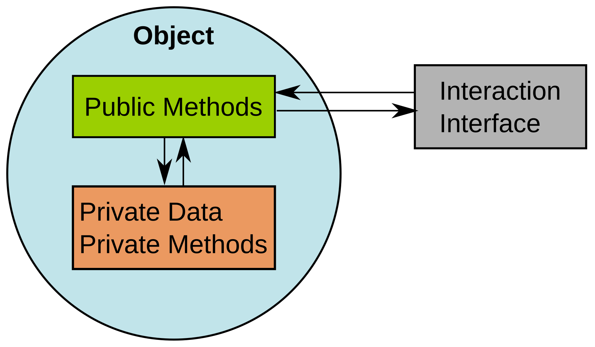
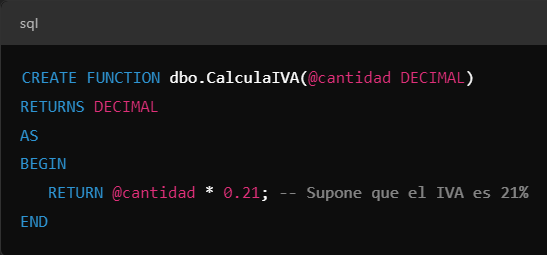
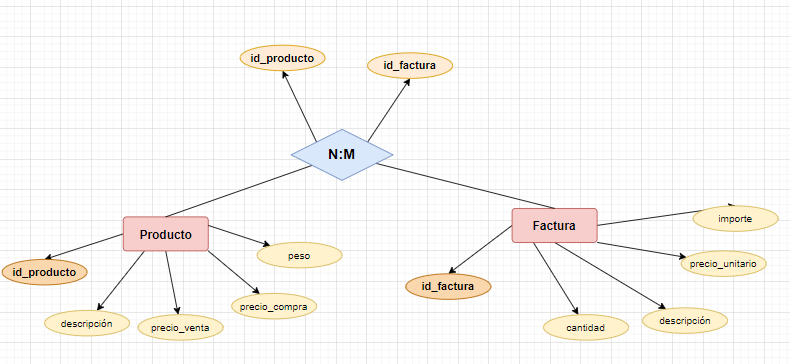
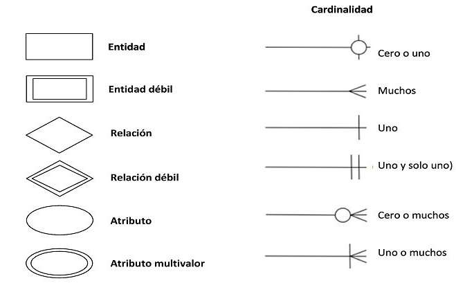

En el contexto de bases de datos, una función es un bloque de código reutilizable que realiza una tarea específica y devuelve un valor. Las funciones se pueden usar para encapsular lógicas o cálculos repetidos, simplificando las consultas y mejorando la modularidad.
Características de las Funciones

Input y Output:
Las funciones pueden aceptar parámetros de entrada y devolver un valor.
Encapsulación de Lógica:
Permiten encapsular una lógica que puede ser reutilizada en múltiples consultas.
Determinismo:
Algunas funciones siempre devuelven el mismo resultado para los mismos parámetros (determinísticas), mientras que otras pueden depender del estado del sistema (no determinísticas).
Uso en Consultas:
Pueden ser usadas dentro de SELECT, WHERE, JOIN, etc.

Tipos de Funciones
Escalares
Devuelven un único valor (como un número o cadena de texto). Por ejemplo, una función para calcular el IVA de una cantidad.
De agregado
Realizan operaciones sobre un conjunto de filas y devuelven un solo valor (como SUM, AVG, COUNT).
De tabla (Table-Valued Functions)
Devuelven una tabla completa.

Modelo Entidad-Relación
Un Modelo Entidad-Relación (ER) es una representación gráfica que describe la estructura lógica de una base de datos. Se utiliza para identificar y organizar los datos y las relaciones entre ellos en un sistema de información.
Componentes del Modelo ER
Entidades
Representan objetos o conceptos del mundo real. Se representan como rectángulos.
Atributos
Características de las entidades. Se representan como óvalos.
Relaciones
Representan cómo las entidades están conectadas entre sí. Se representan como rombos.
Cardinalidad
Indica la cantidad de instancias de una entidad que pueden estar relacionadas con otra entidad.


EJEMPLO BÁSICO DE UN SISTEMA DE GESTIÓN DE ESTUDIANTES Y CURSOS:
ENTIDADES
Estudiante
ID_Estudiante (PK)
Nombre
Apellido
Fecha_Nacimiento
Curso
ID_Curso (PK)
Nombre_Curso
Créditos
RELACIÓN
Inscripción
Un estudiante puede inscribirse en varios cursos, y un curso puede tener varios estudiantes.